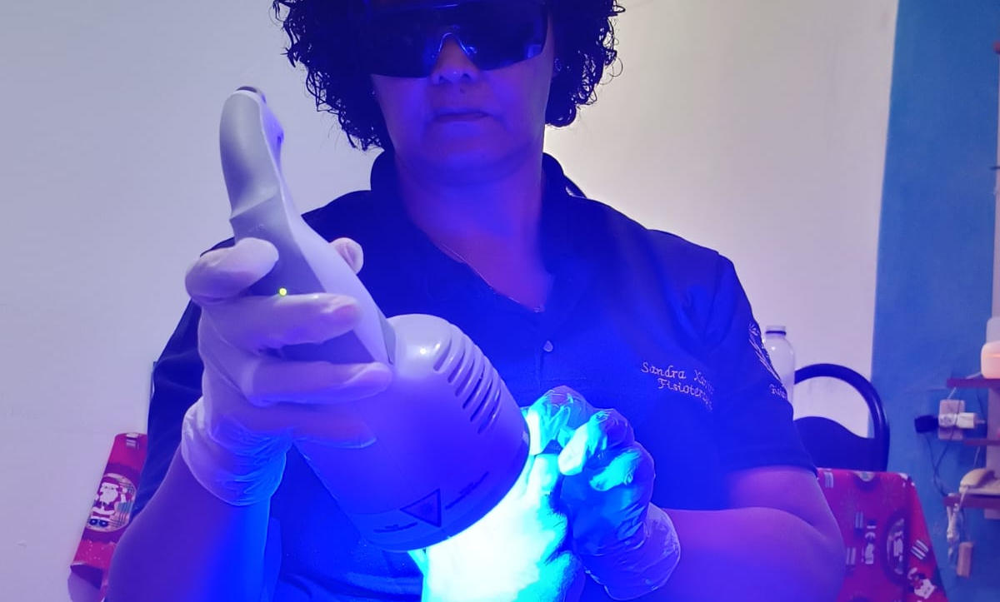

Fisioterapia moderna para resultados reais
No Instituto SaxFisio, Sandra Xavier — CEO e fisioterapeuta — oferece diversos tratamentos com atendimento humano, acolhedor e individualizado. Após uma avaliação cuidadosa, cada plano é pensado para sua rotina e seus objetivos, ajudando você a recuperar movimento, autoestima e autonomia.
Sandra é pós-graduada em Tricologia (INIPE-RJ) e Fisioterapia Traumato-ortopédica (Unyleya), e está cursando pós-graduação em Fisioterapia Intensiva com aplicabilidade em Emergência (Celso Lisboa). Também possui cursos em Auriculoterapia, Crochetagem e Dry Needling.
Um tratamento para cada necessidade
Oferecemos soluções personalizadas para cada tipo de condição e objetivo de recuperação.
Ortopédica
Pós-cirúrgico, entorses, fraturas e lesões articulares — recuperação de força e amplitude passo a passo.
Esportiva
Prevenção de lesões e retorno seguro ao esporte, com testes funcionais específicos para sua modalidade.
Tratamento Capilar
Microagulhamento capilar e Fotobiomodulação — estimulação do crescimento e fortalecimento dos fios.
Tratamento de Feridas
Tratamento especializado para feridas crônicas e agudas, promovendo cicatrização eficiente e reduzindo o risco de infecção.
Tratamentos Faciais
Procedimentos especializados para cuidar da pele do rosto, promovendo saúde e beleza.
Terceira Idade
Equilíbrio, mobilidade e prevenção de quedas para manter a independência.
Um cuidado pensado para você
Da primeira conversa ao acompanhamento, cada etapa respeita suas necessidades e seus objetivos.
Escuta e avaliação
Conversamos sobre suas necessidades, seu histórico e seus objetivos para entender como podemos ajudar.
Plano de cuidado
Definimos juntos as prioridades e as abordagens mais adequadas ao seu tratamento e à sua rotina.
Tratamento individualizado
Cada atendimento segue o plano combinado, com orientação clara e atenção ao seu conforto.
Acompanhamento contínuo
Acompanhamos sua evolução e ajustamos o cuidado sempre que necessário, respeitando seu tempo e seus objetivos.
Cuidado individualizado em cada etapa
A CEO Sandra Xavier é fisioterapeuta e oferece diversos tipos de tratamentos, com cuidado atento às necessidades e aos objetivos de cada pessoa.

Tratamento individualizado para dores articulares, lesões e recuperação funcional.

Cuidado individualizado para a saúde do couro cabeludo e dos fios.
Reabilitação funcional para retorno seguro ao esporte e melhoria da performance.

Cuidado especializado para auxiliar na cicatrização e recuperação da pele.
Sandra Xavier — CEO e fisioterapeuta
Instituto SaxFisioSandra Xavier é CEO do Instituto SaxFisio e fisioterapeuta. Oferece diversos tipos de tratamentos, incluindo fisioterapia ortopédica, esportiva, terapia capilar e tratamento de feridas. Cada atendimento começa com uma escuta cuidadosa e uma avaliação individualizada, com um plano pensado para ajudar você a recuperar movimento, confiança e qualidade de vida.
Vamos começar sua recuperação?
Preencha seus dados e entramos em contato para marcar sua avaliação inicial.